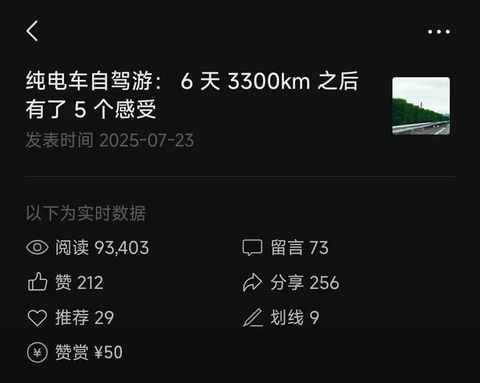
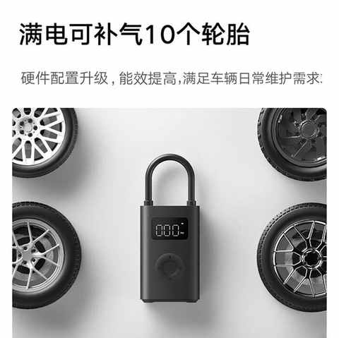
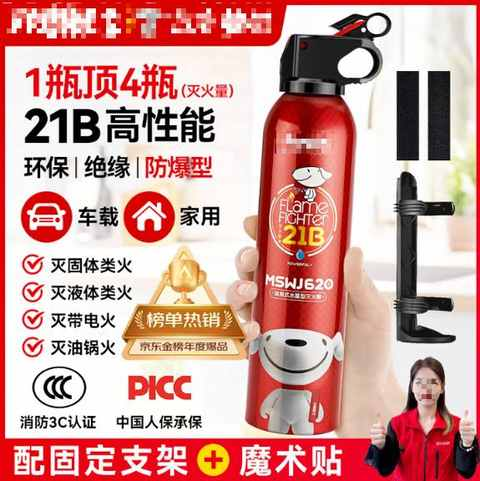
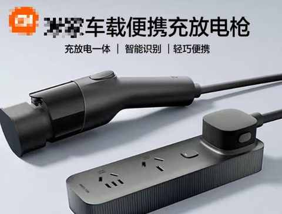
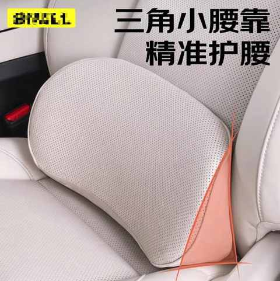
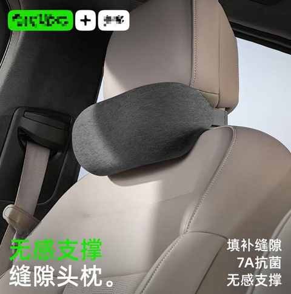
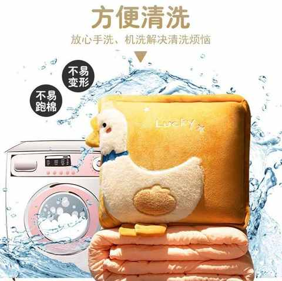
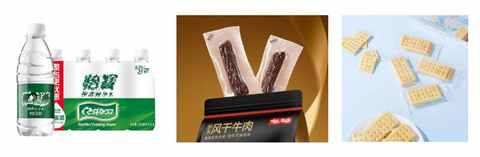
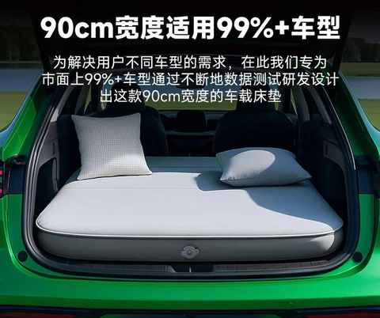

弯路没白走！8年新能源车主的真心话：这8件车载用品，让高速用车体验提升明显！
一、前言
在 7 月份也就是暑期，我们一家三口第一次用纯电 SUV 来了一次长途的自驾游。
当时从珠海返程上海的时候，走的路线和从上海到珠海的稍有不同，回来之后有不少感受和想法。
顺势把当时的所思所想记录并发了出来，于是便有了这篇文章：
纯电车自驾游： 6 天 3300km 之后有了 5 个感受

没想到文章的阅读量不错，而且也不少有自驾游经历的网友们在留言区认真分享了自己的告诉出行经验和攻略。
昨天晚上盘点公众号文章的时候才发现还有一篇一直要写的文章没有写。
弯路没少走！8年新能源车主的真心话：这10件车载好物，日常用车真的离不开！
在国庆后几天，分享了日常用车的车载好物，获得了不错的反馈。
那么，必然不能漏了纯电车在高速长途出行的必备的车载用品。
二、高速用车必备的车载用品
长途出行，不怕一万就怕万一。
每次出行前都得把必要的东西备齐，以防各种意料不到的情况。
1️⃣ 电动充气泵
最近几年送了好几个给提新车的朋友，长途出行可放在车上备用。日常可放在家中，用于给自行车、电动车、各种球充气。
车中常备电动充气泵，能让你在需要补气的时候无需到处找打气筒。

经验分享：
- 部分车型的随车用品中配置有电动充气泵
- 很多品牌都有推出自家的电动充气泵
- 部分电动充气泵会配置手电筒的功能
- 主流的价格范围在 100-200 元
2️⃣ 灭火器
买它就是不希望用它，遇到紧急情况或许也能帮到其他人。

经验分享：
- 一定仔细观看使用视频，买了得会用
- 请购买符合 3C 认证的产品
- 放在车上的固定位置，出现突发情况的时候能第一时间拿到
3️⃣ 随车充
随车充主要是用于应急的，如果去到一些充电不方便的地方，可临时用家用电来充电，一晚上也能补电 30 度左右，至少也能跑个 150km左右，用于应急足矣。

经验分享：
- 部分车型的随车用品中配置有随车充
- 如果价格差别不大，建议选既能充电又能放电的产品
- 充电功率大多为 3.5kw，充电速度偏慢
- 价格范围主要为 500-1000 元
4️⃣ 腰靠
腰靠有多重要，跑过多次长途的司机都能知道。
很多时候并不是座椅设计的不够好，而是在调整某一个觉得舒服的角度之后，长时间乘坐的时候腰部的承托不足， 长时间腰部承托不足特别容易累。

经验分享：
- 是否需要因人因车型而异 有时候会出现坐某个车需要，坐另一款车又不需要了
- 部分车型的官方商城有推出官方版本，适配度会更好
- 各种价位的都有，丰俭由人
5️⃣ 颈枕
颈枕可能是仅次于腰靠的能缓解长途开车疲劳的产品。

经验分享：
- 是否需要因人因车型而异 有时候会出现坐某个车需要，坐另一款车又不需要了
- 部分车型的官方商城有推出官方版本，适配度会更好
- 各种价位的都有，丰俭由人
6️⃣ 抱枕

经验分享：
- 强烈建议选购抱枕 被子二合一 产品
- 长途出行过程中副驾或后排有人睡觉能用上
- 各种价位的都有，丰俭由人
7️⃣ 瓶装水和零食
家里面不能没有吃的喝的，车里面也一样。
现在新能源车很多都有前备箱及后备箱的下沉空间，这两个位置都是放 瓶装水 的好地方，另外一个放水的好位置就是四个车门的位置，每个车门放上 2-3 瓶水。
扶手箱里面适合放小包装的饼干和肉干之类的零食，以便临时充饥。

经验分享：
- 小包装的牛肉干和苏打饼干是不错的选择，吃起来方便也要饱腹感
- 瓶装水可优先选择 330ml左右的版本，更适合放在车门位置
8️⃣ 车载床垫
车载床垫多为充气款，每次使用前需要放平座椅充气使用。
适合有强自驾和在车内过夜的需求的车主，如果无强需求则无需购买。

经验分享：
- 区分通用款和专车专用款
- 部分车型商城里有车型专属的床垫
- 床垫的充气速度和声音是两个值得考量的标准
- 关于软硬程度、体感、舒适度需多看测评多检索相关信息
- 各种价位的都有，丰俭由人
三、结语
长途出行，车是交通工具的同时其的空间属性会大大增强。
如何整个过程中让司机到乘客的体验都越来越好，已经是很多人都关心的问题。
结合自身3万多公里的高速出行经验，整理了 8 个车载用品， 希望以上分享能对你的长途出行有所帮助。
也欢迎大家在留言区分享自己用的趁手的车载用品和好物！
祝所有车主，都有 越来越好的 用车体验！
近期文章
一个中年男人的140次发文，换来第一篇的10万+
为什么说放弃Apple Watch很容易，而真正考验人的是下一块智能手表的选择？
运动后总酸痛？这4个家常小物件，是放松肌肉的“隐形神器”
我的电车购买逻辑：用100kWh大电池的“确定性”，替代三电优化的“不确定性”
从前，有一个笨小孩，他的武器叫“笨功夫”
中年人提高跑量的意外之喜：最大摄氧量首次突破62！
告别选择困难症！翻遍留言区整理的宝藏跑步装备清单！
一双 “问题” 跑鞋带来的顿悟：问题的答案藏在细节里……
没想到送老婆去面试，居然是一次 “班味” 之旅
开了7年混动后投向纯电9个月，一个中年新能源车主的生活有了哪些新变化？